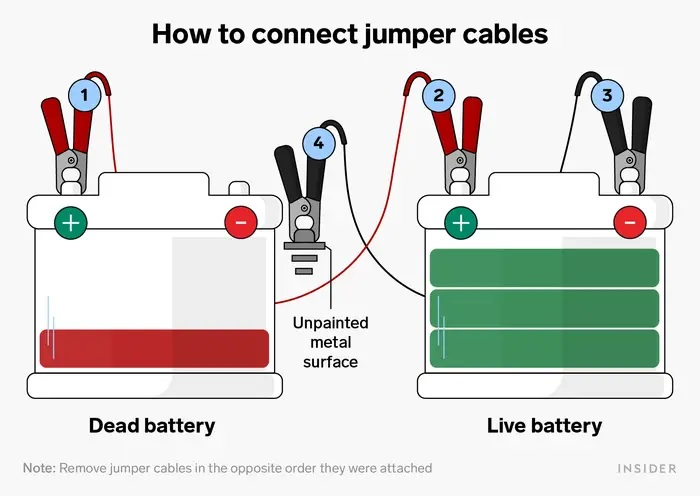

Jump-Starting Your Car: A Step-by-Step Guide for GTA Drivers
If your car battery ever fails you on a chilly Toronto morning, knowing how to jump-start your vehicle can be a lifesaver. In areas like Scarborough, North York, Markham, Pickering, and Ajax, where temperatures can drop significantly, being prepared is crucial.
Introduction
Driving in the Greater Toronto Area comes with its own set of challenges, especially during the winter months when battery issues can become more frequent. Here is a straightforward guide to safely jump-starting your car.
Tools Needed
Before you begin, ensure you have a set of jumper cables and a functional vehicle nearby that can provide a power boost.
Safety Precautions
Safety should always be your first concern. Wear protective gloves and glasses, and ensure both vehicles are turned off before beginning.
Step-by-Step Guide
Locate the Battery: In some cars, the battery is located in the trunk or under the seat. Check your vehicle’s manual if you’re unsure.
Positioning Vehicles: Park the donor vehicle close enough so the cables can reach both batteries but ensure they do not touch each other.
Connecting Cables:
-

Step 1. Connect the red clamp to the positive terminal of the dead battery.
Step 2. Connect the other end of the red clamp to the positive terminal of the donor battery.
Step 3. Attach the black clamp to the negative terminal of the donor battery.
Step 4. Attach the final black clamp to an unpainted metal surface on the stalled car, away from the battery.
Starting the Vehicles
Start the donor vehicle first, then try starting your stalled vehicle.
Final Steps: Once your car is running, remove the cables in the reverse order, and ensure not to let them touch. Let your car run for at least 15 minutes to recharge the battery.
Conclusion
While jump-starting your car is a useful skill, sometimes the problem may require professional attention. For residents in Scarborough, North York, Markham, Pickering, and Ajax, Flash Boost is here ready to assist you promptly.